Introduction to Bayesian Optimisation
In this guide we introduce the Bayesian Optimisation (BO) paradigm for optimising black-box functions. We'll assume an understanding of Gaussian processes (GPs), so if you're not familiar with them, check out our GP introduction notebook.
from typing import (
List,
Tuple,
)
import jax
# Enable Float64 for more stable matrix inversions.
from jax import config
import jax.numpy as jnp
import jax.random as jr
from jaxopt import ScipyBoundedMinimize
from jaxtyping import (
Float,
Int,
install_import_hook,
)
import matplotlib as mpl
from matplotlib import cm
import matplotlib.pyplot as plt
import optax as ox
import tensorflow_probability.substrates.jax as tfp
from examples.utils import use_mpl_style
from gpjax.parameters import Static
from gpjax.typing import (
Array,
FunctionalSample,
ScalarFloat,
)
config.update("jax_enable_x64", True)
with install_import_hook("gpjax", "beartype.beartype"):
import gpjax as gpx
# set the default style for plotting
use_mpl_style()
key = jr.key(42)
cols = mpl.rcParams["axes.prop_cycle"].by_key()["color"]
Some Motivating Examples
Countless problems in the physical world involve optimising functions for which the explicit functional form is unknown, but which can be expensively queried throughout their domain. For example, within the domain of science the task of designing new molecules with optimised properties (Griffiths and Lobato, 2020) is incredibly useful. Here, the domain being optimised over is the space of possible molecules, with the objective function depending on the property being optimised, for instance within drug-design this may be the efficacy of the drug. The function from molecules to efficacy is unknown, but can be queried by synthesising a molecule and running an experiment to measure its efficacy. This is clearly an expensive procedure!
Within the domain of machine learning, the task of optimising neural network architectures is another example of such a problem (commonly referred to as Neural Architecture Search (NAS)). Here, the domain is the space of possible neural network architectures, and the objective function is a metric such as the accuracy of the trained model. Again, the function from neural network architectures to accuracy is unknown, but can be queried by training a model with a given architecture and evaluating its accuracy. This is also an expensive procedure, as training models can be incredibly time consuming and computationally demanding.
Finally, these problems are ubiquitous within the field of climate science, with (Hellan et al., 2023) providing several excellent examples. One such example is the task of deciding where to place wind turbines in a wind farm in order to maximise the energy generated. Here, the domain is the space of possible locations for the wind turbines, and the objective function is the energy generated by the wind farm. The function from locations to energy generated is unknown, but could be queried by running a simulation of the wind farm with the turbines placed at a given set of locations. Running such simulations can be expensive, particularly if they are high-fidelity.
At the heart of all these problems is the task of optimising a function for which we don't have the explicit functional form, but which we can (expensively) query at any point in its domain. Bayesian optimisation provides a principled framework for solving such problems.
What is Bayesian Optimisation?
Bayesian optimisation (BO) (Močkus, 1974) provides a principled method for making decisions under uncertainty. The aim of BO is to find the global minimum of a black-box objective function, \(\min_{\mathbf{x} \in X} f(\mathbf{x})\). The function \(f\) is said to be a black-box function because its explicit functional form is unknown. However, it is assumed that one is able to ascertain information about the function by evaluating it at points in its domain, \(X\). However, these evaluations are assumed to be expensive, as seen in the motivating examples. Therefore, the goal of BO is to minimise \(f\) with as few evaluations of the black-box function as possible.
As such, BO can be thought of as sequential decision-making problem. At each iteration one must choose which point (or batch of points) in a function's domain to evaluate next, drawing on previously observed values to make optimal decisions. In order to do this effectively, we need a way of representing our uncertainty about the black-box function \(f\), which we can update in light of observing more data. Gaussian processes will be an ideal tool for this purpose!
Surrogate models lie at the heart of BO, and are used to model the black-box function. GPs are a natural choice for this model, as they not only provide point estimates for the values taken by the function throughout its domain, but crucially provide a full predictive posterior distribution of the range of values the function may take. This rich quantification of uncertainty enables BO to balance exploration and exploitation in order to efficiently converge upon minima.
Having chosen a surrogate model, which we can use to express our current beliefs about the black-box function, ideally we would like a method which can use the surrogate model's posterior distribution to automatically decide which point(s) in the black-box function's domain to query next. This is where acquisition functions come in. The acquisition function \(\alpha: X \to \mathbb{R}\) is defined over the same domain as the surrogate model, and uses the surrogate model's posterior distribution to quantify the expected utility, \(U\), of evaluating the black-box function at a given point. Simply put, for each point in the black-box function's domain, \(\mathbf{x} \in X\), the acquisition function quantifies how useful it would be to evaluate the black-box function at \(\mathbf{x}\) in order to find the minimum of the black-box function, whilst taking into consideration all the datapoints observed so far. Therefore, in order to decide which point to query next we simply choose the point which maximises the acquisition function, using an optimiser such as L-BFGS (Liu and Nocedal, 1989).
The Bayesian optimisation loop can be summarised as follows, with \(i\) denoting the current iteration:
- Select the next point to query, \(\mathbf{x}_{i}\), by maximising the acquisition function \(\alpha\), defined using the surrogate model \(\mathcal{M}_i\) conditioned on previously observed data \(\mathcal{D}_i\):
-
Evaluate the objective function at \(\mathbf{x}_i\), yielding observation \(y_i = f(\mathbf{x}_i)\).
-
Append the most recent observation to the dataset, \(\mathcal{D}_{i+1} = \mathcal{D}_i \cup \{(\mathbf{x}_i, y_i)\}\).
-
Condition the model on the updated dataset to yield \(\mathcal{M}_{i+1}\).
This process is repeated until some stopping criterion is met, such as a function evaluation budget being exhausted.
There are a plethora of acquisition functions to choose from, each with their own advantages and disadvantages, of which (Shahriari et al., 2015) provides an excellent overview.
In this guide we will focus on Thompson sampling, a conceptually simple yet effective method for characterising the utility of querying points in a black-box function's domain, which will be useful in demonstrating the key aspects of BO.
Thompson Sampling
Thompson sampling (Thompson, 1933) is a simple method which naturally balances exploration and exploitation. The core idea is to, at each iteration of the BO loop, sample a function, \(g\), from the posterior distribution of the surrogate model \(\mathcal{M}_i\), and then evaluate the black-box function at the point(s) which minimise this sample. Given a sample \(g\), from the posterior distribution given by the model \(\mathcal{M}_i\) the Thompson sampling utility function is defined as:
Note the negative sign; this is included as we want to maximise the utility of evaluating the black-box function \(f\) at a given point. We interested in finding the minimum of \(f\), so we maximise the negative of the sample from the posterior distribution \(g\).
As a toy example, we shall be applying BO to the widely used Forrester function:
treating \(f\) as a black-box function. Moreover, we shall restrict the domain of the function to \(\mathbf{x} \in [0, 1]\). We shall also standardise the output of the function, such that it has a mean of 0 and standard deviation of 1. This is quite common practice when using GPs; we're using a zero mean prior, so ensuring that our data has a mean of zero aligns with this, and often we have scale parameters in the covariance function, which are frequently initialised, or have priors set on them, under the assumption that the function being modelled has unit variance. For similar reasons, it can also be useful to normalise the inputs to a GP. The global minimum of this (standardised) function is located at \(x = 0.757\), where \(f(x) = -1.463\).
def standardised_forrester(x: Float[Array, "N 1"]) -> Float[Array, "N 1"]:
mean = 0.45321
std = 4.4258
return ((6 * x - 2) ** 2 * jnp.sin(12 * x - 4) - mean) / std
We'll first go through one iteration of the BO loop step-by-step, before wrapping this up in a loop to perform the full optimisation.
First we'll specify the domain over which we wish to optimise the function, as well as sampling some initial points for fitting our surrogate model using a space-filling design.
lower_bound = jnp.array([0.0])
upper_bound = jnp.array([1.0])
initial_sample_num = 5
initial_x = tfp.mcmc.sample_halton_sequence(
dim=1, num_results=initial_sample_num, seed=key, dtype=jnp.float64
).reshape(-1, 1)
initial_y = standardised_forrester(initial_x)
D = gpx.Dataset(X=initial_x, y=initial_y)
Next we'll define our GP model in the usual way, using a Matérn52 kernel, and fit the kernel parameters by minimising the negative log-marginal likelihood. We'll wrap this in a function as we'll be repeating this process at each iteration of the BO loop.
def return_optimised_posterior(
data: gpx.Dataset, prior: gpx.gps.Prior, key: Array
) -> gpx.gps.AbstractPosterior:
# Our function is noise-free, so we set the observation noise's standard deviation to a very small value
likelihood = gpx.likelihoods.Gaussian(
num_datapoints=data.n, obs_stddev=Static(jnp.array(1e-6))
)
posterior = prior * likelihood
opt_posterior, _ = gpx.fit(
model=posterior,
objective=lambda p, d: -gpx.objectives.conjugate_mll(p, d),
train_data=data,
optim=ox.adam(learning_rate=0.01),
num_iters=1000,
safe=True,
key=key,
verbose=False,
)
return opt_posterior
mean = gpx.mean_functions.Zero()
kernel = gpx.kernels.Matern52(n_dims=1)
prior = gpx.gps.Prior(mean_function=mean, kernel=kernel)
opt_posterior = return_optimised_posterior(D, prior, key)
We can then sample a function from the posterior distribution of the surrogate model. We
will do this using the sample_approx method, which generates an approximate sample
from the posterior using decoupled sampling introduced in (Wilson et al.,
2020) and discussed in our Pathwise
Sampling Notebook. This method
is used as it enables us to sample from the posterior in a manner which scales linearly
with the number of points sampled, \(O(N)\), mitigating the cubic cost associated with
drawing exact samples from a GP posterior, \(O(N^3)\). It also generates more accurate
samples than many other methods for drawing approximate samples from a GP posterior.
Note that we also define a utility_fn which calls the approximate
sample but returns the value returned as a scalar. This is because the sample_approx
function returns an array of shape \([N, B]\), with \(N\) being the number of points within
each sample and \(B\) being the number of samples drawn. We'll only be drawing (and
optimising) one sample at a time, and our optimiser requires the function being
optimised to return a scalar output (only querying it at \(N=1\) points), so we'll remove the axes from the returned value.
approx_sample = opt_posterior.sample_approx(
num_samples=1, train_data=D, key=key, num_features=500
)
utility_fn = lambda x: approx_sample(x)[0][0]
In order to minimise the sample, we'll be using the L-BFGS-B (Byrd et al., 1995) optimiser from the jaxopt
library. This is a gradient-based optimiser which performs optimisation within a bounded
domain. In order to perform optimisation, this optimiser requires a point to start from.
Therefore, we will first query our sample from the posterior at a random set of points,
and then use the lowest point from this set of points as the starting point for the
optimiser. In this example we'll sample 100 points from the posterior, due to the simple
nature of the Forrester function. However, in practice it can be beneficial to
adopt a more sophisticated approach, and there are several heuristics available in the
literature (see for example (Le Riche and Picheny,
2021)). For instance, one may randomly sample the
posterior at a number of points proportional to the dimensionality of the input space,
and one may run gradient-based optimisation from multiple of these points, to reduce the
risk of converging upon local minima.
def optimise_sample(
sample: FunctionalSample,
key: Int[Array, ""],
lower_bound: Float[Array, "D"],
upper_bound: Float[Array, "D"],
num_initial_sample_points: int,
) -> ScalarFloat:
initial_sample_points = jr.uniform(
key,
shape=(num_initial_sample_points, lower_bound.shape[0]),
dtype=jnp.float64,
minval=lower_bound,
maxval=upper_bound,
)
initial_sample_y = sample(initial_sample_points)
best_x = jnp.array([initial_sample_points[jnp.argmin(initial_sample_y)]])
# We want to maximise the utility function, but the optimiser performs minimisation. Since we're minimising the sample drawn, the sample is actually the negative utility function.
negative_utility_fn = lambda x: sample(x)[0][0]
lbfgsb = ScipyBoundedMinimize(fun=negative_utility_fn, method="l-bfgs-b")
bounds = (lower_bound, upper_bound)
x_star = lbfgsb.run(best_x, bounds=bounds).params
return x_star
x_star = optimise_sample(approx_sample, key, lower_bound, upper_bound, 100)
y_star = standardised_forrester(x_star)
Having found the minimum of the sample from the posterior, we can then evaluate the black-box objective function at this point, and append the new observation to our dataset.
Below we plot the posterior distribution of the surrogate model, along with the sample drawn from the model, and the minimiser of this sample returned from the optimiser, which we denote with a star.
def plot_bayes_opt(
posterior: gpx.gps.AbstractPosterior,
sample: FunctionalSample,
dataset: gpx.Dataset,
queried_x: ScalarFloat,
) -> None:
plt_x = jnp.linspace(0, 1, 1000).reshape(-1, 1)
forrester_y = standardised_forrester(plt_x)
sample_y = sample(plt_x)
latent_dist = posterior.predict(plt_x, train_data=dataset)
predictive_dist = posterior.likelihood(latent_dist)
predictive_mean = predictive_dist.mean()
predictive_std = predictive_dist.stddev()
fig, ax = plt.subplots()
ax.plot(plt_x, predictive_mean, label="Predictive Mean", color=cols[1])
ax.fill_between(
plt_x.squeeze(),
predictive_mean - 2 * predictive_std,
predictive_mean + 2 * predictive_std,
alpha=0.2,
label="Two sigma",
color=cols[1],
)
ax.plot(
plt_x,
predictive_mean - 2 * predictive_std,
linestyle="--",
linewidth=1,
color=cols[1],
)
ax.plot(
plt_x,
predictive_mean + 2 * predictive_std,
linestyle="--",
linewidth=1,
color=cols[1],
)
ax.plot(plt_x, sample_y, label="Posterior Sample")
ax.plot(
plt_x,
forrester_y,
label="Forrester Function",
color=cols[0],
linestyle="--",
linewidth=2,
)
ax.axvline(x=0.757, linestyle=":", color=cols[3], label="True Optimum")
ax.scatter(dataset.X, dataset.y, label="Observations", color=cols[2], zorder=2)
ax.scatter(
queried_x,
sample(queried_x),
label="Posterior Sample Optimum",
marker="*",
color=cols[3],
zorder=3,
)
ax.legend(loc="center left", bbox_to_anchor=(0.975, 0.5))
plt.show()
plot_bayes_opt(opt_posterior, approx_sample, D, x_star)
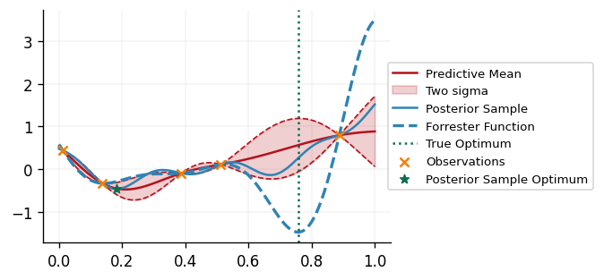
At this point we can update our model with the newly augmented dataset, and repeat the whole process until some stopping criterion is met. Below we repeat this process for 10 iterations, printing out the queried point and the value of the black-box function at each iteration.
bo_iters = 5
# Set up initial dataset
initial_x = tfp.mcmc.sample_halton_sequence(
dim=1, num_results=initial_sample_num, seed=key, dtype=jnp.float64
).reshape(-1, 1)
initial_y = standardised_forrester(initial_x)
D = gpx.Dataset(X=initial_x, y=initial_y)
for _ in range(bo_iters):
key, subkey = jr.split(key)
# Generate optimised posterior using previously observed data
mean = gpx.mean_functions.Zero()
kernel = gpx.kernels.Matern52(n_dims=1)
prior = gpx.gps.Prior(mean_function=mean, kernel=kernel)
opt_posterior = return_optimised_posterior(D, prior, subkey)
# Draw a sample from the posterior, and find the minimiser of it
approx_sample = opt_posterior.sample_approx(
num_samples=1, train_data=D, key=subkey, num_features=500
)
x_star = optimise_sample(
approx_sample, subkey, lower_bound, upper_bound, num_initial_sample_points=100
)
plot_bayes_opt(opt_posterior, approx_sample, D, x_star)
# Evaluate the black-box function at the best point observed so far, and add it to the dataset
y_star = standardised_forrester(x_star)
print(f"Queried Point: {x_star}, Black-Box Function Value: {y_star}")
D = D + gpx.Dataset(X=x_star, y=y_star)
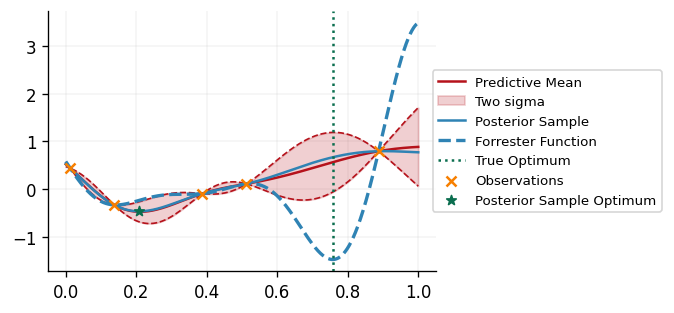
Queried Point: [[0.73097461]], Black-Box Function Value: [[-1.38629658]]
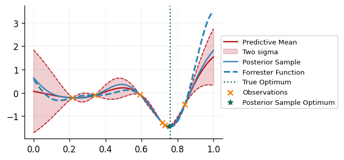
Queried Point: [[0.7513479]], Black-Box Function Value: [[-1.45864605]]
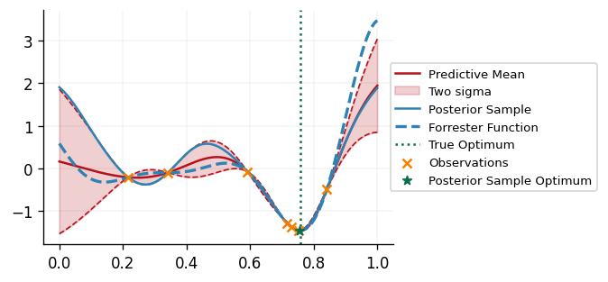
Queried Point: [[0.75543104]], Black-Box Function Value: [[-1.46237852]]
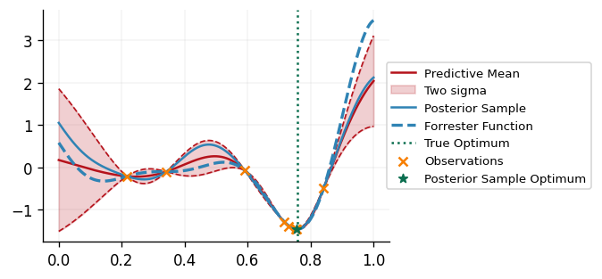
Queried Point: [[0.75605009]], Black-Box Function Value: [[-1.46260234]]
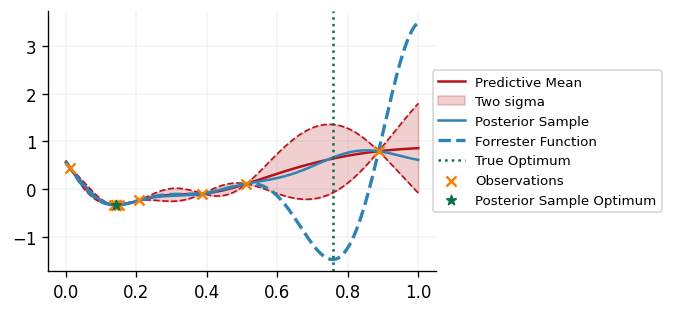
Queried Point: [[0.75621512]], Black-Box Function Value: [[-1.46264657]]
Below we plot the best observed black-box function value against the number of times the black-box function has been evaluated. Note that the first 5 samples are randomly sampled to fit the initial GP model, and we denote the start of using BO to sample with the dotted vertical line.
We can see that the BO algorithm quickly converges to the global minimum of the black-box function!
fig, ax = plt.subplots()
fn_evaluations = jnp.arange(1, bo_iters + initial_sample_num + 1)
cumulative_best_y = jax.lax.associative_scan(jax.numpy.minimum, D.y)
ax.plot(fn_evaluations, cumulative_best_y)
ax.axvline(x=initial_sample_num, linestyle=":")
ax.axhline(y=-1.463, linestyle="--", label="True Minimum")
ax.set_xlabel("Number of Black-Box Function Evaluations")
ax.set_ylabel("Best Observed Value")
ax.legend()
plt.show()
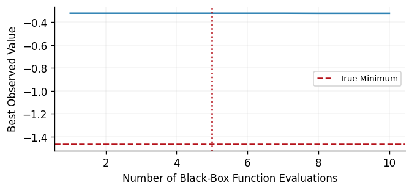
A More Challenging Example - The Six-Hump Camel Function
We'll now apply BO to a more challenging example, the Six-Hump Camel Function. This is a function of two inputs defined as follows:
We'll be evaluating it over the domain \(x_1 \in [-2, 2]\) and \(x_2 \in [-1, 1]\), and shall standardise it. The global minima of this function are located at \(\mathbf{x} = (0.0898, -0.7126)\) and \(\mathbf{x} = (-0.0898, 0.7126)\), where the standardised function takes the value \(f(\mathbf{x}) = -1.8377\).
def standardised_six_hump_camel(x: Float[Array, "N 2"]) -> Float[Array, "N 1"]:
mean = 1.12767
std = 1.17500
x1 = x[..., :1]
x2 = x[..., 1:]
term1 = (4 - 2.1 * x1**2 + x1**4 / 3) * x1**2
term2 = x1 * x2
term3 = (-4 + 4 * x2**2) * x2**2
return (term1 + term2 + term3 - mean) / std
First, we'll visualise the function over the domain of interest:
x1 = jnp.linspace(-2, 2, 100)
x2 = jnp.linspace(-1, 1, 100)
x1, x2 = jnp.meshgrid(x1, x2)
x = jnp.stack([x1.flatten(), x2.flatten()], axis=1)
y = standardised_six_hump_camel(x)
fig, ax = plt.subplots(subplot_kw={"projection": "3d"})
surf = ax.plot_surface(
x1,
x2,
y.reshape(x1.shape[0], x2.shape[0]),
linewidth=0,
cmap=cm.coolwarm,
antialiased=False,
)
ax.set_xlabel("x1")
ax.set_ylabel("x2")
plt.show()
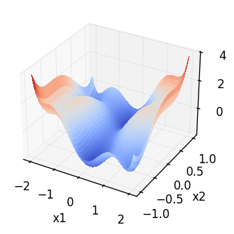
For more clarity, we can generate a contour plot of the function which enables us to see the global minima of the function more clearly.
x_star_one = jnp.array([[0.0898, -0.7126]])
x_star_two = jnp.array([[-0.0898, 0.7126]])
fig, ax = plt.subplots()
contour_plot = ax.contourf(
x1, x2, y.reshape(x1.shape[0], x2.shape[0]), cmap=cm.coolwarm, levels=40
)
ax.scatter(
x_star_one[0][0], x_star_one[0][1], marker="*", color=cols[2], label="Global Minima"
)
ax.scatter(x_star_two[0][0], x_star_two[0][1], marker="*", color=cols[2])
ax.set_xlabel("x1")
ax.set_ylabel("x2")
fig.colorbar(contour_plot)
ax.legend()
plt.show()
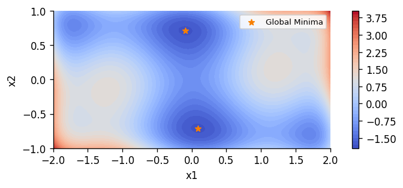
Next, we'll run the BO loop using Thompson sampling as before. This time we'll run the experiment 5 times in order to see how the algorithm performs on average, with different starting points for the initial GP model. This is good practice, as the performance obtained is likely to vary between runs depending on the initialisation samples used to fit the initial GP model.
lower_bound = jnp.array([-2.0, -1.0])
upper_bound = jnp.array([2.0, 1.0])
initial_sample_num = 5
bo_iters = 12
num_experiments = 5
bo_experiment_results = []
for experiment in range(num_experiments):
print(f"Starting Experiment: {experiment + 1}")
# Set up initial dataset
initial_x = tfp.mcmc.sample_halton_sequence(
dim=2, num_results=initial_sample_num, seed=key, dtype=jnp.float64
)
initial_x = jnp.array(lower_bound + (upper_bound - lower_bound) * initial_x)
initial_y = standardised_six_hump_camel(initial_x)
D = gpx.Dataset(X=initial_x, y=initial_y)
for i in range(bo_iters):
key, subkey = jr.split(key)
# Generate optimised posterior
mean = gpx.mean_functions.Zero()
kernel = gpx.kernels.Matern52(
active_dims=[0, 1], lengthscale=jnp.array([1.0, 1.0]), variance=2.0
)
prior = gpx.gps.Prior(mean_function=mean, kernel=kernel)
opt_posterior = return_optimised_posterior(D, prior, subkey)
# Draw a sample from the posterior, and find the minimiser of it
approx_sample = opt_posterior.sample_approx(
num_samples=1, train_data=D, key=subkey, num_features=500
)
x_star = optimise_sample(
approx_sample,
subkey,
lower_bound,
upper_bound,
num_initial_sample_points=1000,
)
# Evaluate the black-box function at the best point observed so far, and add it to the dataset
y_star = standardised_six_hump_camel(x_star)
print(
f"BO Iteration: {i + 1}, Queried Point: {x_star}, Black-Box Function Value:"
f" {y_star}"
)
D = D + gpx.Dataset(X=x_star, y=y_star)
bo_experiment_results.append(D)
Starting Experiment: 1
BO Iteration: 1, Queried Point: [[ 0.36059918 -0.35834144]], Black-Box Function Value: [[-1.03762921]]
BO Iteration: 2, Queried Point: [[ 1.41837478 -1. ]], Black-Box Function Value: [[-0.24179257]]
BO Iteration: 3, Queried Point: [[ 0.06971748 -1. ]], Black-Box Function Value: [[-1.00254889]]
BO Iteration: 4, Queried Point: [[ 0.35825722 -0.73189492]], Black-Box Function Value: [[-1.62151773]]
BO Iteration: 5, Queried Point: [[1.66807604 0.0442017 ]], Black-Box Function Value: [[0.84289922]]
BO Iteration: 6, Queried Point: [[ 0.19527337 -0.7953453 ]], Black-Box Function Value: [[-1.75590159]]
BO Iteration: 7, Queried Point: [[-1.93068214 -0.98560747]], Black-Box Function Value: [[3.11483417]]
BO Iteration: 8, Queried Point: [[ 0.1586017 -0.7278912]], Black-Box Function Value: [[-1.82149956]]
BO Iteration: 9, Queried Point: [[ 0.11680112 -0.70263651]], Black-Box Function Value: [[-1.83438287]]
BO Iteration: 10, Queried Point: [[ 0.12291673 -0.67120828]], Black-Box Function Value: [[-1.82163744]]
BO Iteration: 11, Queried Point: [[ 0.09744995 -0.70936262]], Black-Box Function Value: [[-1.83741246]]
BO Iteration: 12, Queried Point: [[ 0.09169574 -0.71166932]], Black-Box Function Value: [[-1.83768108]]
Starting Experiment: 2
BO Iteration: 1, Queried Point: [[ 0.17622687 -1. ]], Black-Box Function Value: [[-1.00569245]]
BO Iteration: 2, Queried Point: [[0.00616011 1. ]], Black-Box Function Value: [[-0.95434732]]
BO Iteration: 3, Queried Point: [[-0.02838519 0.01429419]], Black-Box Function Value: [[-0.95801818]]
BO Iteration: 4, Queried Point: [[0.24091311 0.0083065 ]], Black-Box Function Value: [[-0.76663582]]
BO Iteration: 5, Queried Point: [[-1.02156846 0.78975006]], Black-Box Function Value: [[-0.51667276]]
BO Iteration: 6, Queried Point: [[-0.32675118 -0.65917443]], Black-Box Function Value: [[-1.26944316]]
BO Iteration: 7, Queried Point: [[ 1.94410266 -1. ]], Black-Box Function Value: [[0.03817044]]
BO Iteration: 8, Queried Point: [[-0.01339889 -0.59885886]], Black-Box Function Value: [[-1.73530909]]
BO Iteration: 9, Queried Point: [[-0.05524705 -0.56032575]], Black-Box Function Value: [[-1.65624519]]
BO Iteration: 10, Queried Point: [[ 0.15310835 -0.65788391]], Black-Box Function Value: [[-1.80231597]]
BO Iteration: 11, Queried Point: [[ 0.14984094 -0.62720234]], Black-Box Function Value: [[-1.77653386]]
BO Iteration: 12, Queried Point: [[ 0.08816482 -0.66278325]], Black-Box Function Value: [[-1.82161011]]
Starting Experiment: 3
BO Iteration: 1, Queried Point: [[ 1.11866365 -0.03937436]], Black-Box Function Value: [[1.01474185]]
BO Iteration: 2, Queried Point: [[-0.11517237 1. ]], Black-Box Function Value: [[-1.01289565]]
BO Iteration: 3, Queried Point: [[ 0.40523541 -1. ]], Black-Box Function Value: [[-0.79250777]]
BO Iteration: 4, Queried Point: [[-1.39892183 0.45487241]], Black-Box Function Value: [[-0.11636531]]
BO Iteration: 5, Queried Point: [[-0.46285002 1. ]], Black-Box Function Value: [[-0.70357506]]
BO Iteration: 6, Queried Point: [[-0.14918689 0.70403817]], Black-Box Function Value: [[-1.82522377]]
BO Iteration: 7, Queried Point: [[-0.148957 0.71611721]], Black-Box Function Value: [[-1.82634922]]
BO Iteration: 8, Queried Point: [[-0.12642028 0.71553725]], Black-Box Function Value: [[-1.83332743]]
BO Iteration: 9, Queried Point: [[0.12837952 0.74181146]], Black-Box Function Value: [[-1.66550325]]
BO Iteration: 10, Queried Point: [[-0.09067488 0.71056643]], Black-Box Function Value: [[-1.83766668]]
BO Iteration: 11, Queried Point: [[-0.09096523 0.71145628]], Black-Box Function Value: [[-1.83768546]]
BO Iteration: 12, Queried Point: [[-0.09105418 0.71465191]], Black-Box Function Value: [[-1.83767017]]
Starting Experiment: 4
BO Iteration: 1, Queried Point: [[-0.99787788 -0.30657909]], Black-Box Function Value: [[0.90855687]]
BO Iteration: 2, Queried Point: [[1.70426646 0.94205179]], Black-Box Function Value: [[1.82814195]]
BO Iteration: 3, Queried Point: [[0.31704642 0.24668703]], Black-Box Function Value: [[-0.76329335]]
BO Iteration: 4, Queried Point: [[ 0.11437267 -0.90659219]], Black-Box Function Value: [[-1.50203479]]
BO Iteration: 5, Queried Point: [[ 0.32968187 -0.91897475]], Black-Box Function Value: [[-1.31531746]]
BO Iteration: 6, Queried Point: [[ 2. -1.]], Black-Box Function Value: [[0.51545816]]
BO Iteration: 7, Queried Point: [[-0.23192887 1. ]], Black-Box Function Value: [[-0.97911428]]
BO Iteration: 8, Queried Point: [[ 0.1138837 -0.57407815]], Black-Box Function Value: [[-1.72368621]]
BO Iteration: 9, Queried Point: [[ 0.14954105 -0.55868134]], Black-Box Function Value: [[-1.68648837]]
BO Iteration: 10, Queried Point: [[-0.07673881 -0.28635684]], Black-Box Function Value: [[-1.17729148]]
BO Iteration: 11, Queried Point: [[-1.76863061 1. ]], Black-Box Function Value: [[-0.62095394]]
BO Iteration: 12, Queried Point: [[ 0.09750077 -0.63245391]], Black-Box Function Value: [[-1.79701872]]
Starting Experiment: 5
BO Iteration: 1, Queried Point: [[ 1.78000236 -0.60097141]], Black-Box Function Value: [[-0.78793276]]
BO Iteration: 2, Queried Point: [[-0.6221491 0.08809319]], Black-Box Function Value: [[0.03378971]]
BO Iteration: 3, Queried Point: [[-2. 0.42018707]], Black-Box Function Value: [[1.00744701]]
BO Iteration: 4, Queried Point: [[ 0.91528993 -0.70711219]], Black-Box Function Value: [[-0.59721187]]
BO Iteration: 5, Queried Point: [[-0.20299474 0.40108709]], Black-Box Function Value: [[-1.35129301]]
BO Iteration: 6, Queried Point: [[-0.02996613 0.87468122]], Black-Box Function Value: [[-1.59084942]]
BO Iteration: 7, Queried Point: [[-0.46392072 1. ]], Black-Box Function Value: [[-0.70183095]]
BO Iteration: 8, Queried Point: [[-0.02846526 0.73223049]], Black-Box Function Value: [[-1.82131303]]
BO Iteration: 9, Queried Point: [[-0.19060166 0.70000776]], Black-Box Function Value: [[-1.80266649]]
BO Iteration: 10, Queried Point: [[0.0325098 0.56456673]], Black-Box Function Value: [[-1.67971379]]
BO Iteration: 11, Queried Point: [[ 0.31274705 -1. ]], Black-Box Function Value: [[-0.90974709]]
BO Iteration: 12, Queried Point: [[-0.08837811 0.73725152]], Black-Box Function Value: [[-1.83330147]]
We'll also run a random benchmark, whereby we randomly sample from the search space for 20 iterations. This is a useful benchmark to compare the performance of BO against in order to ascertain how much of an advantage BO provides over such a simple approach.
random_experiment_results = []
for i in range(num_experiments):
key, subkey = jr.split(key)
initial_x = bo_experiment_results[i].X[:5]
initial_y = bo_experiment_results[i].y[:5]
final_x = jr.uniform(
key,
shape=(bo_iters, 2),
dtype=jnp.float64,
minval=lower_bound,
maxval=upper_bound,
)
final_y = standardised_six_hump_camel(final_x)
random_x = jnp.concatenate([initial_x, final_x], axis=0)
random_y = jnp.concatenate([initial_y, final_y], axis=0)
random_experiment_results.append(gpx.Dataset(X=random_x, y=random_y))
Finally, we'll process the experiment results to find the log regret at each iteration of the experiments. The regret is defined as the difference between the minimum value of the black-box function observed so far and the true global minimum of the black box function. Mathematically, at time \(t\), with observations \(\mathcal{D}_t\), for function \(f\) with global minimum \(f^*\), the regret is defined as:
We'll then take the mean and standard deviation of the log of the regret values across the 5 experiments.
def obtain_log_regret_statistics(
experiment_results: List[gpx.Dataset],
global_minimum: ScalarFloat,
) -> Tuple[Float[Array, "N 1"], Float[Array, "N 1"]]:
log_regret_results = []
for exp_result in experiment_results:
observations = exp_result.y
cumulative_best_observations = jax.lax.associative_scan(
jax.numpy.minimum, observations
)
regret = cumulative_best_observations - global_minimum
log_regret = jnp.log(regret)
log_regret_results.append(log_regret)
log_regret_results = jnp.array(log_regret_results)
log_regret_mean = jnp.mean(log_regret_results, axis=0)
log_regret_std = jnp.std(log_regret_results, axis=0)
return log_regret_mean, log_regret_std
bo_log_regret_mean, bo_log_regret_std = obtain_log_regret_statistics(
bo_experiment_results, -1.8377
)
(
random_log_regret_mean,
random_log_regret_std,
) = obtain_log_regret_statistics(random_experiment_results, -1.8377)
Now, when we plot the mean and standard deviation of the log regret at each iteration, we can see that BO outperforms random sampling!
fig, ax = plt.subplots()
fn_evaluations = jnp.arange(1, bo_iters + initial_sample_num + 1)
ax.plot(fn_evaluations, bo_log_regret_mean, label="Bayesian Optimisation")
ax.fill_between(
fn_evaluations,
bo_log_regret_mean[:, 0] - bo_log_regret_std[:, 0],
bo_log_regret_mean[:, 0] + bo_log_regret_std[:, 0],
alpha=0.2,
)
ax.plot(fn_evaluations, random_log_regret_mean, label="Random Search")
ax.fill_between(
fn_evaluations,
random_log_regret_mean[:, 0] - random_log_regret_std[:, 0],
random_log_regret_mean[:, 0] + random_log_regret_std[:, 0],
alpha=0.2,
)
ax.axvline(x=initial_sample_num, linestyle=":")
ax.set_xlabel("Number of Black-Box Function Evaluations")
ax.set_ylabel("Log Regret")
ax.legend()
plt.show()
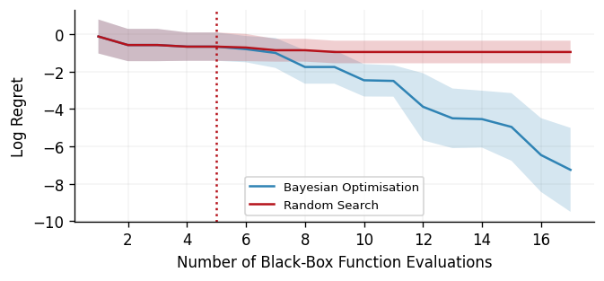
It can also be useful to plot the queried points over the course of a single BO run, in order to gain some insight into how the algorithm queries the search space. Below we do this for one of the BO experiments, and can see that the algorithm initially performs some exploration of the search space whilst it is uncertain about the black-box function, but it then hones in one one of the global minima of the function, as we would hope!
fig, ax = plt.subplots()
contour_plot = ax.contourf(
x1, x2, y.reshape(x1.shape[0], x2.shape[0]), cmap=cm.coolwarm, levels=40
)
ax.scatter(
x_star_one[0][0],
x_star_one[0][1],
marker="*",
color=cols[2],
label="Global Minimum",
zorder=2,
)
ax.scatter(x_star_two[0][0], x_star_two[0][1], marker="*", color=cols[2], zorder=2)
ax.scatter(
bo_experiment_results[1].X[:, 0],
bo_experiment_results[1].X[:, 1],
marker="x",
color=cols[1],
label="Bayesian Optimisation Queries",
)
ax.set_xlabel("x1")
ax.set_ylabel("x2")
fig.colorbar(contour_plot)
ax.legend()
plt.show()
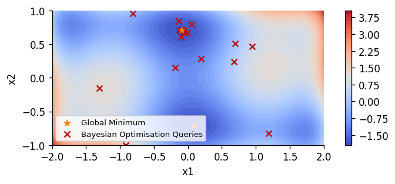
Other Acquisition Functions and Further Reading
As mentioned previously, there are many acquisition functions which one may use to characterise the expected utility of querying the black-box function at a given point. We list two of the most popular below:
- Probability of Improvement (PI) (Kushner, 1964): Given the lowest objective function observation so far, \(f(\mathbf{x}^*)\), PI calculates the probability that the objective function's value at a given point \(\mathbf{x}\) is lower than \(f(\mathbf{x}^*)\). Given a GP surrogate model \(\mathcal{M}_i\), PI is defined mathematically as: $$ \alpha_{\text{PI}}(\mathbf{x}; \mathcal{D}i, \mathcal{M}_i) = \mathbb{P}[\mathcal{M}_i (\mathbf{x}) < f(\mathbf{x}^)] = \Phi \left(\frac{f(\mathbf{x}^) - \mu{\mathcal{M}i}(\mathbf{x})}{\sigma{\mathcal{M}_i}(\mathbf{x})}\right) $$
with \(\Phi(\cdot)\) denoting the standard normal cumulative distribution function.
- Expected Improvement (EI) (Močkus, 1974) - EI goes beyond PI by not only considering the probability of improving on the current best observed point, but also taking into account the magnitude of improvement. Mathematically, this is defined as follows: $$ \begin{aligned} \alpha_{\text{EI}}(\mathbf{x};\mathcal{D}i, \mathcal{M}_i) &= \mathbb{E}[(f(\mathbf{x}^) - \mathcal{M}_i(\mathbf{x}))\mathbb{I}(\mathcal{M}_i(\mathbf{x}) < f(\mathbf{x}^))] \ &= \underbrace{(f(\mathbf{x}^) - \mu_{\mathcal{M}_i}(\mathbf{x}))\Phi \left(\frac{f(\mathbf{x}^) - \mu{\mathcal{M}i}(\mathbf{x})}{\sigma{\mathcal{M}i}(\mathbf{x})}\right)}\text{exploits areas with low mean} \ &+ \underbrace{\sigma_{\mathcal{M}i}(\mathbf{x}) \phi \left(\frac{f(\mathbf{x}^*) - \mu{\mathcal{M}i}(\mathbf{x})}{\sigma{\mathcal{M}i}(\mathbf{x})}\right)}\text{explores areas with high variance} \nonumber \end{aligned} $$
with \(\mathbb{I}(\cdot)\) denoting the indicator function and \(\phi(\cdot)\) being the standard normal probability density function.
For those particularly interested in diving deeper into Bayesian optimisation, be sure to check out Shahriari et al.'s "Taking the Human Out of the Loop: A Review of Bayesian Optimization", which includes a wide variety of acquisition functions, as well as some examples of more exotic BO problems, such as problems which also feature unknown constraints.
System Configuration
Author: Thomas Christie
Last updated: Tue Oct 01 2024
Python implementation: CPython
Python version : 3.10.14
IPython version : 8.27.0
optax : 0.2.3
tensorflow_probability: 0.24.0
matplotlib : 3.9.2
jaxtyping : 0.2.34
jaxopt : 0.8.2
jax : 0.4.27
gpjax : 0.9.2
Watermark: 2.5.0